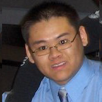

Interestingly, he has extensive knowledge in automation controls, including PLCs, robotics, digital and electronic circuits, as well as Fluid control systems, extending from the traditional Ryerson teachings in electronics. He is also talented with the mechanical aspect of manufacturing and design in that he possesses experience with a college background in metal fabrication using mills, lathes, drill presses and other various tools. Shane has also gained a wealth of practical knowledge from his experiences working in the field for one year as a pneumatics control technician, at Supreme Tooling, where he not only provided pneumatic control to hundreds of machines, but programmed Omron PLC’s as well as assembling robotic cells for automation assembly lines.
During his spare time he enjoys wakeboarding, skiing/snowboarding, ski doing, working out, flying airplanes and playing guitar with a band he is trying to form with friends. He also enjoys helping his best friend with his race car during the summer months.
In addition to this experience, Mike has also participated at a successful OEC competition, in February 2003 and has volunteered as a froshleader for the last 2 years. As a froshleader Mike has had a chance to meet with large amount of the electrical and computer engineering students and can act as familiar face to HECs new members. In fact, Mike is one of the more respectable, responsible characters anybody could ever meet. His positive attitude and practical experience in electronics would be of interest to the HEC.
He participates in “figure-8” races at town fairs across Ontario every summer; these races consist of broken-down cars that have been rehabilitated to race around in a confined figure-8 track, where body contact of cars is allowed and often encouraged by the crowd. Interestingly, he has done very well in these races.
Bryan’s sublime talent is a clear indication that he would be a helpful member for the HEC executive; however, his uncanny willingness to help his classmates understand concepts makes him even more vital. Without a doubt, his encouraging outlook and Edison-like abilities would be an asset to the HEC.
 Administrative Assistant: Barry Vuong
Barry Vuong is a 3rd Electrical Engineer student and is working as a Computer Technician for Keep IT Simple Solution INC. Barry also has an Honors and Ontario Scholar from High School. Throughout high school Barry has taken computer engineering and programming courses and is very familiar with digital logic circuits. His contribution at Science Olympics at York University, in Robo-code and Bouncing Chemicals in 2001, help place his high school 4th overall. Also Barry has represented Ryerson at OEC at Queens University, in First Year Team Design in February 2004.
Currently, he is an executive member of both Hobby Electronics Club and The Ryerson Robotics Club. On top of that Barry is apart of Ryerson’s Electrical and Computer Student Society.